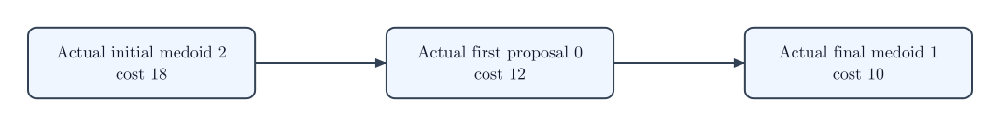
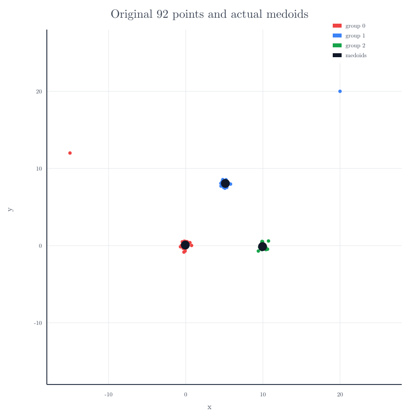
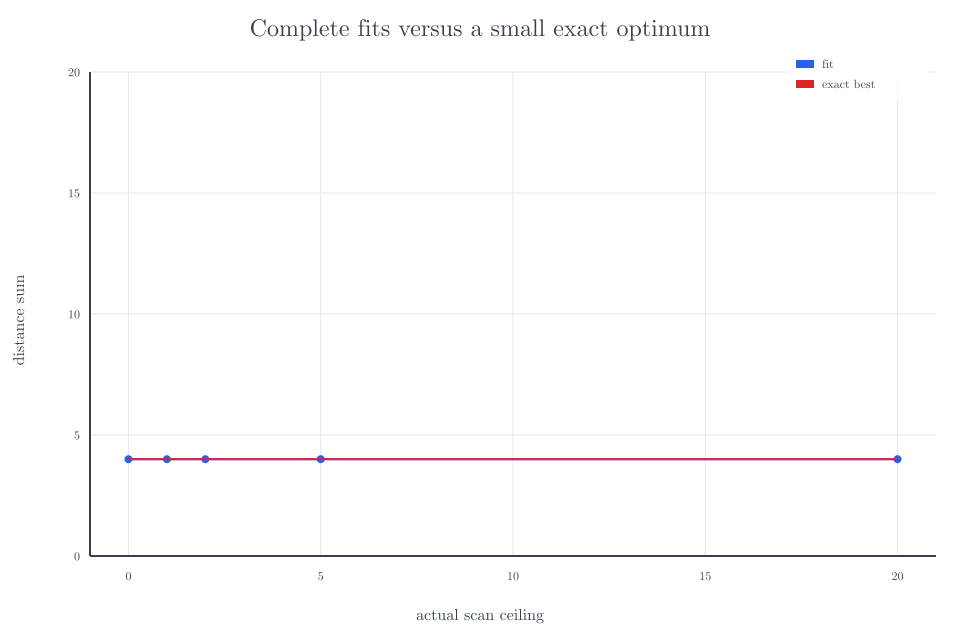
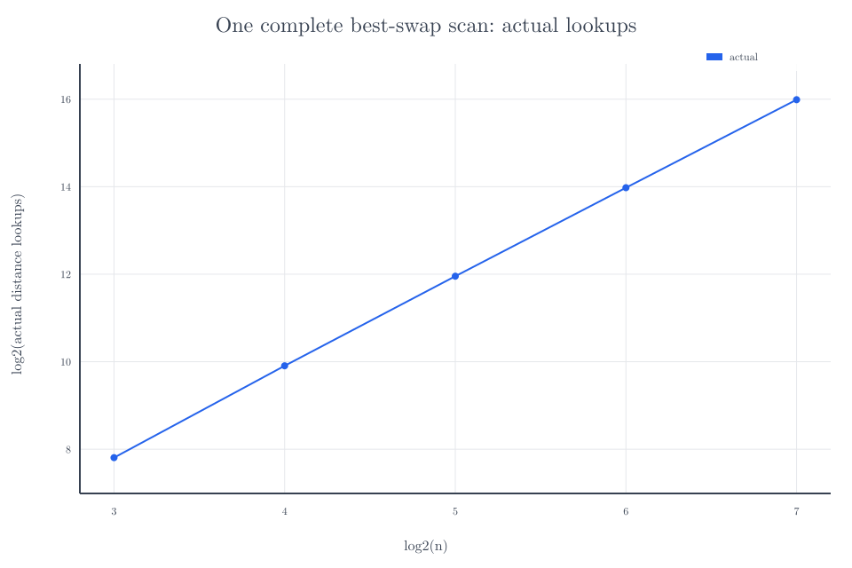

K-medoids through actual candidate swaps
Abstract
Clustering by medoids chooses actual input points to represent groups while minimizing a sum of distances. Selecting the globally best k representatives is combinatorial; this implementation uses a seeded random start and complete one-swap neighborhoods. We inspect actual proposed and committed objectives, retain the original three noisy blobs and two outliers, and distinguish an exhausted neighborhood from an iteration limit. Input-point representatives do not make the fitted clustering invariant to contamination.
The objective and the actual variant
For finite points x_i in a common positive dimension and k distinct representative identities M, minimize
The library precomputes a symmetric distance matrix. A seeded mt19937_64 shuffle chooses k distinct identities. This is random initialization followed by PAM-style SWAP, not Kaufman–Rousseeuw’s greedy BUILD and not FastPAM. Every scan visits medoid slots then original non-medoids. A proposal replaces the running scan incumbent only when its rounded cost is smaller by more than the absolute threshold 1e-12. The last such proposal is committed, its assignment recomputed once, and the process repeats. Distance ties use the first medoid slot; distinct identities at coincident coordinates can yield empty clusters.
A no-improvement exit means no one-swap proposal beats the current objective by that threshold. It does not establish the global optimum. A limit exit has not tested the final neighborhood. Zero iterations returns only initialization. Actual history stores the evaluated proposals separately from accepted trajectory states, so a plot of every proposal need not be monotone, while committed costs strictly decrease.
Three points: see proposals before commitment
On the line at0,2,10 with k=1, direct sums are12,10,18. The middle point is the unique optimum. The diagram uses the actual initial identity, first evaluated proposal and final result; it does not infer an unobserved path.
#include <dm/dm.hpp>
int main() {
std::filesystem::create_directories("build");
const auto t = dm::algorithms::k_medoids_trace({{0}, {2}, {10}}, 1, 100, 0);
std::print("| actual scan | slot | proposed point | objective | new scan best |\n| ---: | ---: | ---: | " "---: | --- |\n");
for (const auto &e : t.candidates)
std::print("| {} | {} | {} | {:.12f} | {} |\n", e.iteration, e.slot,
e.point, e.cost, e.best_changed);
std::print("\nFinal medoid {}; objective {:.12f}; accepted swaps {}; exhausted neighborhood {}.\n",
t.result.medoids[0], t.result.total_cost, t.result.iterations,
t.stop == dm::algorithms::KMedoidsStop::NoImprovement);
const auto &e = t.candidates.front();
dm::graphics::Diagram d;
d.node("start", {0, 0},
std::format("Actual initial medoid {}\ncost {}",
t.states.front().medoids[0], t.states.front().cost)).node("trial", {6, 0}, std::format("Actual first proposal {}\ncost {}", e.point, e.cost)).node("finish", {12, 0}, std::format("Actual final medoid {}\ncost {}", t.result.medoids[0], t.result.total_cost)).edge("start", "trial").edge("trial", "finish").save_svg("build/k_medoids_proposals.svg");
}| actual scan | slot | proposed point | objective | new scan best |
|---|---|---|---|---|
| 0 | 0 | 0 | 12.000000000000 | true |
| 0 | 0 | 1 | 10.000000000000 | true |
| 1 | 0 | 0 | 12.000000000000 | false |
| 1 | 0 | 2 | 18.000000000000 | false |
Final medoid 1; objective 10.000000000000; accepted swaps 1; exhausted neighborhood true.

Original three blobs and two outliers
Retain the original generator: mt19937_64 seed4, independent normal perturbations with standard deviation0.3 about(0,0),(10,0),(5,8), thirty points per center, then(20,20) and(−15,12). The fit uses k3, at most100 scans and initialization seed2. The 92 points are synthetic controls, not an external dataset. The two outliers enter the objective and can affect the selected medoids; their mere absorption is no proof of invariance.
#include <dm/dm.hpp>
int main() {
std::filesystem::create_directories("build");
std::mt19937_64 rng(4);
std::normal_distribution<double> j(0, .3);
std::vector<std::vector<double>> data;
for (const auto &c : std::vector<std::vector<double>>{{0, 0}, {10, 0},
{5, 8}})
for (int i = 0; i < 30; ++i)
data.push_back({c[0] + j(rng), c[1] + j(rng)});
data.push_back({20, 20});
data.push_back({-15, 12});
const auto t = dm::algorithms::k_medoids_trace(data, 3, 100, 2);
std::vector<std::size_t> sizes(3);
for (auto c : t.result.assignment)
++sizes[c];
std::print("| cluster slot | medoid identity | medoid x | medoid y | assigned count |\n| ---: | ---: | " "---: | ---: | ---: |\n");
for (std::size_t c = 0; c < 3; ++c) {
auto m = t.result.medoids[c];
std::print("| {} | {} | {:.12f} | {:.12f} | {} |\n", c, m, data[m][0],
data[m][1], sizes[c]);
}
std::print("\n| accepted state | actual objective |\n| ---: | ---: |\n");
for (std::size_t i = 0; i < t.states.size(); ++i)
std::print("| {} | {:.12f} |\n", i, t.states[i].cost);
std::print("\nActual candidate evaluations {}; assignment passes {}; distance lookups {}; pair " "distances {}; exhausted {}.\n",
t.work.candidates, t.work.assignment_passes,
t.work.distance_lookups, t.work.distance_pairs,
t.stop == dm::algorithms::KMedoidsStop::NoImprovement);
auto p = dm::graphics::RPlot::create();
const std::vector<dm::graphics::RGB> cols = {{239, 68, 68}, {59, 130, 246},
{22, 163, 74}};
for (std::size_t c = 0; c < 3; ++c) {
std::vector<double> x, y;
for (std::size_t i = 0; i < data.size(); ++i)
if (t.result.assignment[i] == c) {
x.push_back(data[i][0]);
y.push_back(data[i][1]);
}
p.points(x, y, std::format("group {}", c), cols[c], 3.5);
}
std::vector<double> mx, my;
for (auto m : t.result.medoids) {
mx.push_back(data[m][0]);
my.push_back(data[m][1]);
}
p.points(mx, my, "medoids", {17, 24, 39}, 9).size(850, 850).margins(95, 35,
60, 70).x_limits(-18, 28).y_limits(-18, 28).title("Original 92 points and actual medoids").x_label("x").y_label("y").save_svg("build/k_medoids_original.svg");
}| cluster slot | medoid identity | medoid x | medoid y | assigned count |
|---|---|---|---|---|
| 0 | 15 | -0.054277661182 | 0.077459205484 | 31 |
| 1 | 80 | 5.137511934239 | 8.060877660336 | 31 |
| 2 | 54 | 9.957987095489 | -0.127893928727 | 30 |
| accepted state | actual objective |
|---|---|
| 0 | 338.128340610981 |
| 1 | 81.390889364129 |
| 2 | 75.223093882291 |
| 3 | 71.445372385371 |
Actual candidate evaluations 1068; assignment passes 1072; distance lookups 295872; pair distances 4186; exhausted true.

A complete limit is different from convergence
The fixed line0,1,2,8,9,10 has a two-medoid global optimum of4 at identities1 and4. Every fit below is a separate complete experiment with its actual iteration limit, not a reconstruction of one fit from repeated prefixes. The trace’s termination reason distinguishes a tested local optimum from a limit. Full-budget seeds need not find the same global optimum on arbitrary data.
#include <dm/dm.hpp>
int main() {
std::filesystem::create_directories("build");
const std::vector<std::vector<double>> data = {{0}, {1}, {2}, {8}, {9}, {10}};
std::vector<double> x, y;
std::print("| actual limit | accepted swaps | actual cost | exhausted neighborhood |\n| ---: | ---: | " "---: | --- |\n");
for (std::size_t limit : {0, 1, 2, 5, 20}) {
const auto t = dm::algorithms::k_medoids_trace(data, 2, limit, 7);
std::print("| {} | {} | {:.12f} | {} |\n", limit, t.result.iterations,
t.result.total_cost,
t.stop == dm::algorithms::KMedoidsStop::NoImprovement);
x.push_back(limit);
y.push_back(t.result.total_cost);
}
auto p = dm::graphics::RPlot::create();
p.line(x, y, "fit", {37, 99, 235}, 2).points(x, y, "", {37, 99, 235}, 4).line({0, 20}, {4, 4}, "exact best", {220, 38, 38}, 2).y_limits(0, 20).x_label("actual scan ceiling").y_label("distance sum").title("Complete fits versus a small exact optimum").save_svg("build/k_medoids_limits.svg");
}| actual limit | accepted swaps | actual cost | exhausted neighborhood |
|---|---|---|---|
| 0 | 0 | 4.000000000000 | false |
| 1 | 0 | 4.000000000000 | true |
| 2 | 0 | 4.000000000000 | true |
| 5 | 0 | 4.000000000000 | true |
| 20 | 0 | 4.000000000000 | true |

Checking actual selected work
For n points and k medoids, each complete swap scan evaluates exactly k(n−k) proposals, and each proposal computes n*k distance lookups. There is one initial assignment pass and one additional pass per accepted swap. Thus the recorded lookup count equals assignment_passes*n*k; the matrix evaluates n(n−1)/2 unordered distances. These are producing counters, excluding validation, coordinate norm work, shuffling, allocations, copies and elapsed time. Matrix preparation costs O(n²d) and a naive full scan O(k²n(n−k)); this is deliberately not the faster cached nearest/second-nearest PAM implementation.
#include <dm/dm.hpp>
int main() {
std::filesystem::create_directories("build");
std::vector<double> x, y;
std::print("| n | candidate evaluations | assignment passes | actual lookups | passes times n times k | " "distance pairs |\n| ---: | ---: | ---: | ---: | ---: | ---: |\n");
for (std::size_t n : {8, 16, 32, 64, 128}) {
std::vector<std::vector<double>> data;
for (std::size_t i = 0; i < n; ++i)
data.push_back({double(i), double(i % 3)});
const auto t = dm::algorithms::k_medoids_trace(data, 2, 1, 7);
std::print("| {} | {} | {} | {} | {} | {} |\n", n, t.work.candidates,
t.work.assignment_passes, t.work.distance_lookups,
t.work.assignment_passes * n * 2, t.work.distance_pairs);
x.push_back(std::log2(n));
y.push_back(std::log2(t.work.distance_lookups));
}
auto p = dm::graphics::RPlot::create();
p.line(x, y, "actual", {37, 99, 235}, 2).points(x, y, "", {37, 99, 235}, 4).title("One complete best-swap scan: actual lookups").x_label("log2(n)").y_label("log2(actual distance lookups)").save_svg("build/k_medoids_work.svg");
}| n | candidate evaluations | assignment passes | actual lookups | passes times n times k | distance pairs |
|---|---|---|---|---|---|
| 8 | 12 | 14 | 224 | 224 | 28 |
| 16 | 28 | 30 | 960 | 960 | 120 |
| 32 | 60 | 62 | 3968 | 3968 | 496 |
| 64 | 124 | 126 | 16128 | 16128 | 2016 |
| 128 | 252 | 254 | 65024 | 65024 | 8128 |

Scope and verification
Inputs are complete finite rectangular rows with positive dimension. Widened coordinate subtraction and hypot accumulation avoid the old squared-double overflow/underflow; distances and sequential objective must still fit finite double. Invalid shape is rejected before pair access. Trace admission counts one record per input row, proposal and accepted state, not their inner values. The separate complete n*n distance-cell ceiling is checked before allocation. Defaults are one million records/cells, zero disables optional caps, and scalar fitting has no trace quota. Neither ceiling bounds peak bytes; returned data, states and proposals own their values.
Independent objectives, assignments and full local neighborhoods checked101
fits,226 accepted/initial states and4214 actual candidate records, including
all92 original points. Frozen checks preserved1000 integer-line fits exactly and
the original contaminated-blob medoid identities/assignments with objective
tolerance1e-10. Native controls cover duplicate identities, complete quotas,
ownership and finite-range failures. The ten-report shared build passed141
native CTest cases,45 directly instrumented address/undefined-behaviour
sanitizer cases,90 compiled/executed public examples,412/412 scoped file
definitions plus11/11 changed lagged-Fibonacci engine definitions, and ten
representative clangd hovers. All four complete report programs executed and all
four native figures were visually reviewed. Receipts and repeatable checks are
retained under build/mepml-conversion/batch-184-193/.
References
L. Kaufman and P. J. Rousseeuw(1990), Finding Groups in Data: An Introduction to Cluster Analysis. The distinction between its BUILD/SWAP method and this random-start exhaustive-swap variant is explicit above.